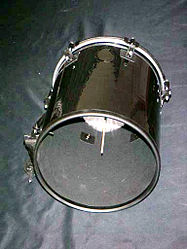

Cuíca or "kuweeca", is a Brazilian friction drum with a large pitch range,
produced by changing tension on the head of the drum. Cuíca is Portuguese for a
type of small opossum which is known to make a high-pitched sound. It is most
often used in samba music. The tone it produces has a high-pitched squeaky
timbre.
It has been called a 'laughing gourd' due to this sound. Many also claim
that the cuica has a "monkey" sound.
There are a number of styles of cuíca found around the globe. Its origins are
disputed. Different sources trace it to Bantu slaves, to Spain, and to Muslim
traders.
It is also believed that the cuica was used in Africa as a call for the
male lion since the sound mimics the roar of the female lioness. The instrument
was introduced to Brazil by African slaves, where it found its place in samba
music.

Characteristics:
The cuíca has a wooden stick fastened at one end inside the drum in the center
of the drumhead. This stick is rosined and rubbed with a cloth.Changing the
pressure on this stick produces the different pitches and timbres.
The body of
the cuíca is normally made of metal, gourd or synthetic material. It has a
single head, normally 6 to 10 inches in diameter (15–25 cm), made of animal
skin. A thin bamboo stick is attached to the center of, and perpendicular to,
the drum head, extending into the drum's interior.
The instrument is held under
one arm at chest height with the help of a shoulder strap. To play the cuíca,
the musician rubs the stick up and down with a wet cloth held in one hand, using
the fingers of the other hand to press down on the skin of the drum near the
place where the stick is attached. The rubbing motion produces the sound and the
pitch is increased or decreased by changing the pressure on the head.
Usage:
The cuíca is used to accompany a variety of different folk and urban popular
dances. For example, it may be part of the instrumental ensemble for the May
dança de Santa Cruz or for the moçambique dramatic dance (bailado) in Minas
Gerais.
It also is used in Holy Cross dances and processions and in performances
of São Paulo rural sambas.
The cuíca plays an important rhythmic role in samba music of all kinds. It is
particularly notable as a fixture of Rio de Janeiro's Carnival groups, which
feature entire sections of cuíca players.
It is so commonly used in
radio-oriented samba music that in the absence of a cuíca player, Brazilian
singers or other musicians imitate the sound of the cuíca with their voices.
An
example of this imitation can be heard on the intro part of Dizzy Gillespie's
version of Chega de Saudade (from the "Dizzy on the French Riviera" album, 1965)
composed by Antonio Carlos Jobim. Along with samba, the cuíca is one of the
mainly used Brazilian instruments in jazz-rock, free jazz, and Latin jazz